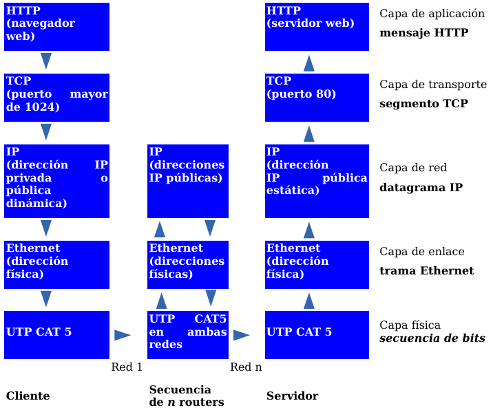
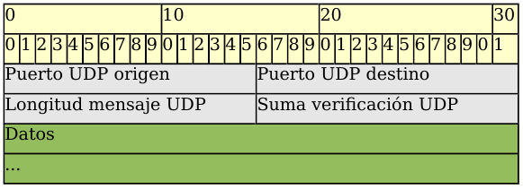
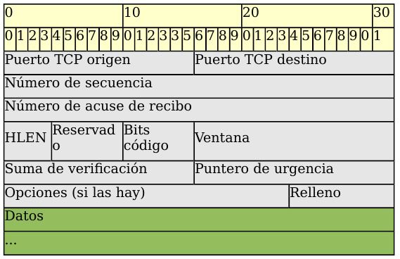
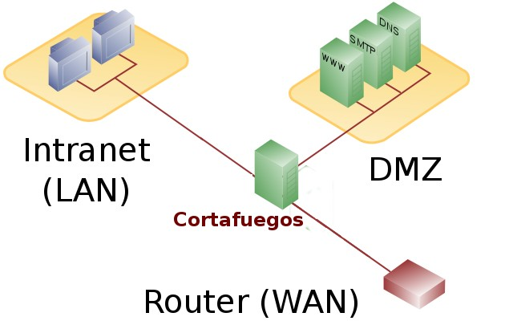

Tema 7. Capa de transporte¶
En este tema bajamos a la capa que conecta las aplicaciones con la red: puertos, sockets, UDP y TCP. También practicamos con netstat y nmap, y vemos de forma breve cortafuegos, proxy, balanceo y VPN. El NAT completo se desarrolla en el Tema 8.
Primera clase
Empieza por el cuestionario inicial. No hace falta estudiar el tema completo antes: el cuestionario sirve para ver qué sabes al empezar.
Propuesta didáctica¶
Trabajamos los RA4 y RA5 del módulo Redes de área local (0225), con apoyo de RA1 cuando haga falta:
RA4. Instala equipos en red, describiendo sus prestaciones y aplicando técnicas de montaje.
RA5. Mantiene una red local interpretando recomendaciones de los fabricantes de hardware o software y estableciendo la relación entre disfunciones y sus causas.
RA1. Reconoce la estructura de redes locales cableadas analizando las características de entornos de aplicación y describiendo la funcionalidad de sus componentes.
Criterios de evaluación (selección)¶
RA4
- CE4g: Se han identificado los protocolos.
- CE4h: Se han configurado los parámetros básicos.
RA5
- CE5a: Se han identificado incidencias y comportamientos anómalos.
- CE5b: Se ha identificado si la disfunción es debida al hardware o al software.
- CE5d: Se han verificado los protocolos de comunicaciones.
- CE5e: Se ha localizado la causa de la disfunción.
- CE5h: Se ha elaborado un informe de incidencias.
RA1 (apoyo)
- CE1a: Se han descrito los principios de funcionamiento de las redes locales.
- CE1c: Se han descrito los elementos de la red local y su función.
VLAN y Wi‑Fi
Las VLAN (CE4j) no se desarrollan aquí. Lo inalámbrico (CE4c–e) solo aparece si hace falta como contexto de servicios; el foco es transporte y herramientas.
Contenidos¶
- Capa de transporte en TCP/IP y OSI: segmentación, multiplexación, puertos.
- Sockets (IP:puerto); well-known / registered / ephemeral.
- UDP y TCP: cabeceras, handshake, ventana; comparación y casos de uso.
netstatynmap(solo en red autorizada).- Cortafuegos (políticas); proxy, balanceo y VPN (visión breve).
- NAT: puntero al Tema 8 (sin duplicar el capítulo).
Programación de aula (orientativa, ~14–16 h)¶
| Sesiones | Contenidos | Actividades |
|---|---|---|
| 1 | Presentación + cuestionario | Cuestionario |
| 2–3 | Transporte, sockets, tipos de puertos | AC701, AC702 |
| 4–5 | UDP, TCP, handshake, comparación | AC703 |
| 6–7 | Laboratorio netstat + nmap + informe |
AC704, AC705, PR701 |
| 8–9 | Firewall, proxy / balanceo / VPN | AC706, AC707 |
| 10–11 | Repaso; captura TCP/UDP en PT (si toca) | PR702 (cuando toque) |
Cuestionario inicial¶
Antes de empezar — responde con lo que sepas
- ¿Para qué sirve la capa de transporte en una red TCP/IP?
- ¿Qué diferencia hay entre una dirección IP y un puerto?
- ¿Qué es un socket? Pon un ejemplo.
- ¿En qué se diferencian UDP y TCP?
- ¿Por qué usamos TCP para descargar archivos y, a menudo, UDP para voz?
- ¿Qué función cumple un cortafuegos en una red?
- ¿Has oído hablar de
netstatonmap? ¿Para qué crees que sirven?
Soluciones
Las soluciones se trabajan en clase o se publican en Aules cuando proceda.
La capa de transporte¶
Los programas de aplicación (navegador, correo, juego…) generan datos que deben ir de un host origen a un host destino. La capa de transporte se ocupa de la comunicación lógica entre aplicaciones en distintos equipos.

Responsabilidades habituales:
- Multiplexar varias conversaciones a la vez.
- Identificar aplicaciones con puertos.
- Segmentar y reensamblar datos.
- Entregar a la capa de red (IP) segmentos (TCP) o datagramas (UDP).
Los dos protocolos clave: UDP y TCP.
Puertos y sockets¶
No basta con la IP: en cada equipo hay muchas aplicaciones. Un puerto es un número 0–65535 en la cabecera de transporte que identifica el servicio o proceso.
Un socket es la pareja IP:puerto. Ejemplo: 192.168.1.10:80. Una conexión queda identificada por dos sockets:
IP_origen:puerto_origen ↔ IP_destino:puerto_destino
Tipos de puertos¶
| Tipo | Rango | Uso principal |
|---|---|---|
| Well-known | 0–1023 | Servicios estándar (HTTP, HTTPS, SSH, DNS…) |
| Registered | 1024–49151 | Aplicaciones y servicios de usuario |
| Ephemeral | 49152–65535 | Puertos temporales del cliente (asignados por el SO) |
Ejemplos well-known¶
| Puerto | Servicio |
|---|---|
| 22/tcp | SSH |
| 53/tcp·udp | DNS |
| 67/68/udp | DHCP |
| 80/tcp | HTTP |
| 443/tcp | HTTPS |
| 25/tcp | SMTP |
| 110/tcp · 143/tcp | POP3 · IMAP |
Conocerlos ayuda a leer salidas de netstat y reglas de cortafuegos.
Protocolo UDP¶
UDP es no orientado a conexión y de mejor esfuerzo: los datagramas pueden perderse, duplicarse o llegar desordenados. La cabecera es pequeña (4 campos / 8 bytes).

Campos: puerto origen, puerto destino, longitud, suma de verificación.
Cuándo usarlo: baja latencia y tolerancia a pérdidas (streaming en vivo, VoIP, juegos; también DNS/TFTP en muchos casos).
Protocolo TCP¶
TCP es orientado a conexión y fiable: entrega sin errores, sin duplicados y en orden (retransmisión, ACK, secuencia).

Campos clave: puertos, número de secuencia, ACK, flags (SYN, ACK, FIN, RST/PSH/URG), ventana (control de flujo), checksum.
Three-way handshake y cierre¶
- Cliente → SYN.
- Servidor → SYN+ACK.
- Cliente → ACK. Luego van los datos.
Para cerrar: FIN / ACK en ambos sentidos (cuatro segmentos en el cierre ordenado típico).
La ventana deslizante permite enviar varios segmentos sin esperar un ACK por cada uno.
TCP frente a UDP¶
| Característica | TCP | UDP |
|---|---|---|
| Conexión | Orientado a conexión | Sin conexión previa |
| Fiabilidad | Confirma, reordena, retransmite | Mejor esfuerzo |
| Control de flujo | Sí (ventana) | No |
| Cabecera | Más grande | Muy pequeña |
| Usos típicos | Web, correo, FTP, SSH | Streaming, VoIP, juegos, DNS |
Herramientas: netstat y nmap¶
netstat — puertos en tu equipo¶
Opciones habituales: -a (todas), -n (números), -p (proceso), -t/-u (TCP/UDP en Linux), -l (escucha).
# Windows
netstat -na
# Linux
netstat -punta
nmap — escaneo (solo con permiso)¶
nmap 192.168.1.1
Uso autorizado
Escanea solo equipos y redes donde tengas permiso explícito (aula, lab, tu propio host). En contextos reales, el escaneo no autorizado puede ser ilegal o sancionable.
Estas herramientas ayudan a verificar protocolos (CE5d) y a distinguir si un fallo parece de servicio/software o de conectividad/hardware (CE5b).
NAT (puntero al Tema 8)¶
NAT permite que muchos hosts con IP privadas salgan a Internet con pocas IP públicas. Con PAT, además se traducen puertos.

Profundidad en el Tema 8
Tipos (estático, dinámico, PAT), terminología local/global e IPv6 → Tema 8 — NAT e IPv6. Aquí no duplicamos ese capítulo.
Cortafuegos¶
Un firewall filtra tráfico según una política, permitiendo lo autorizado y bloqueando el resto.

- Personal (en el PC) vs de red (borde / perímetro).
- Restrictiva: denegar por defecto; solo lo explícitamente permitido.
- Permisiva: permitir por defecto; denegar lo listado.
La restrictiva suele ser más segura. En Linux: iptables / nftables, UFW.
Proxy, balanceo y VPN (visión breve)¶
Proxy¶
Intermediario que hace peticiones en nombre de los clientes. Puede cachear, ahorrar ancho de banda y filtrar contenido. Un proxy transparente intercepta (con ayuda del firewall) sin configurar el navegador.
Balanceador de carga¶
Reparte peticiones entre varios servidores (o enlaces) para rendimiento y disponibilidad. A menudo actúa como proxy inverso.
VPN¶
Extiende de forma segura una red privada sobre Internet mediante un túnel cifrado (acceso remoto o sede–sede). Tecnologías habituales: IPsec, SSL/TLS, OpenVPN.
Actividades¶
Formato de entrega
Las entregas en Aules son obligatorias en Markdown (.md). No se aceptan PDF.
Nombre del archivo: AC7XX.md o PR7XX.md (sustituye XX por el número). Respeta la fecha de vencimiento.
Escribiremos los .md con Visual Studio Code.
Cómo empezar
- Guía de Markdown: tutorialmarkdown.com/guia
- Documentación de Visual Studio Code: code.visualstudio.com/docs
AC701 — Sockets y puertos¶
- AC701. (RA1 // CE1a, CE1c // RA4 // CE4g // AC 0–1). Tras estudiar sockets/puertos: define socket con un ejemplo; explica cómo distinguirías dos servidores web en el mismo host; indica si cada pestaña del navegador usa necesariamente un puerto distinto y por qué.
AC702 — Tipos de puertos¶
- AC702. (RA4 // CE4g // AC 0–1). Tabla: tipo, rango y ejemplos (≥5 well-known, ≥3 registered, ≥2 usos ephemeral). Explica por qué los well-known suelen exigir privilegios de administrador.
AC703 — TCP frente a UDP (casos)¶
- AC703. (RA4 // CE4g // AC 0–1). Para cada caso, elige TCP o UDP y justifica: (1) descarga de ISO, (2) videollamada, (3) consulta DNS, (4) juego FPS online, (5) SSH.
AC704 — Práctica con netstat¶
- AC704. (RA5 // CE5b, CE5d // AC 0–1). Abre el navegador (varias webs), ejecuta
netstat -na(Windows) onetstat -punta(Linux), localiza ≥3 conexiones a 80/443 y clasifica los puertos locales (well-known / registered / ephemeral).
AC705 — nmap autorizado¶
- AC705. (RA5 // CE5a, CE5d // AC 0–1). En red de aula o lab con permiso:
nmap IP_DESTINO; anota ≥5 puertos abiertos/filtrados y el servicio; explica por qué hay que pedir autorización antes de escanear.
AC706 — Política de firewall del centro¶
- AC706. (RA4 // CE4h // RA5 // CE5a // AC 0–1). Propón una política restrictiva para un instituto: tráfico saliente permitido, entrante permitido (p. ej. web pública) y ≥3 denegaciones con justificación.
AC707 — Proxy, balanceo o VPN¶
- AC707. (RA1 // CE1c // RA4 // CE4g // AC 0–1). Elige dos de estos tres (o unifica en un texto breve): (a) ventaja de un proxy transparente en un centro; (b) por qué un balanceador delante de varios servidores web; (c) recorrido y ventajas de una VPN de teletrabajo.
PR701 — Laboratorio de puertos (netstat + nmap)¶
- PR701. (RA5 // CE5b, CE5d, CE5e, CE5h // RA4 // CE4g // PR 0–10). Laboratorio individual o en pareja:
- Inventario con
netstat: conexiones establecidas y puertos en escucha; captura/texto en el informe. - Escaneo
nmapautorizado a un host de práctica; lista de puertos/servicios. - Relaciona al menos un hallazgo con un posible problema (servicio caído, puerto inesperado, filtrado).
- Conclusión: ¿el síntoma apunta más a hardware o a software/configuración?
Entrega: PR701.md (obligatorio) con capturas o salidas relevantes.
| Criterio | Descripción | Puntos |
|---|---|---|
Procedimiento netstat |
Salidas claras y bien interpretadas | 0–2 |
Escaneo nmap autorizado |
Método y resultados correctos | 0–2 |
| Clasificación de puertos | Well-known / registered / ephemeral | 0–2 |
| Diagnóstico CE5b/CE5d | Hardware vs software; protocolos | 0–2 |
Informe .md |
Claridad, estructura, conclusiones | 0–2 |
| Total | /10 |
PR702 — Captura TCP/UDP en Packet Tracer (cuando toque)¶
- PR702. (RA4 // CE4g // RA5 // CE5d // PR 0–10). Simulación en Packet Tracer: observar handshake TCP y tráfico UDP (DNS u otro). El guion completo se facilitará en clase / Aules.
Referencias rápidas¶
- Sitio del módulo: fjavier-hernandez.github.io/ral
- Continuación NAT/IPv6: Tema 8
- Simulación: Cisco Packet Tracer
- Entregas: Visual Studio Code + Markdown
- Normas: Normas del taller